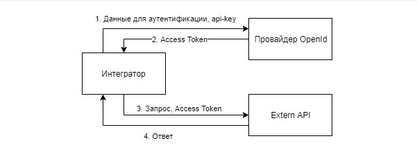

Аутентификация OpenID Connect¶
Аутентификация в API Контур.Экстерна основана на протоколе OpenID Connect. Для работы с API необходимо получить Access Token и передавать его в заголовках запросов (Header parameters). Для получения Access Token необходимо предварительно получить api-key и client_id.
Стандартный способ передачи Access Token в API Контур.Экстерна — через заголовок (Header parameters) в формате:
Authorization: Bearer <token>
Отдельно стоит отметить, что аутентификация для всех продуктов Контура единая, и получение Access Token происходит вне API Контур.Экстерна, а в отдельном API OpenId Провайдера:
Рабочая площадка: https://identity.kontur.ru
Тестовая площадка: https://identity.testkontur.ru
OpenId Connect
OpenID Connect — протокол аутентификации, построен на базе протокола OAuth2.0. Аутентификация происходит с помощью OpenID Провайдера, который оперирует токенами.
Почему OpenId:
Аутентификация пользователя происходит с помощью Access Token.
OpenID Connect поддерживает несколько способов получения токенов:
OpenID Connect не работает с cookies на вашем домене.
Основные понятия
OpenID Provider (Провайдер) — аутентификационный сервер, который реализует протокол OpenID Connect. Провайдер имеет открытый и закрытый ключи. Также Провайдер выдает токены, которыми оперирует OpenID Connect.
Access Token — некоторый идентификатор, позволяет идентифицировать пользователя и выполнять действия от его имени в API.
Схема взаимодействия
Приложению интегратора необходимо авторизовываться в Провайдере и получать там Access Token. Затем передавать токен в Extern API с каждым запросом.
